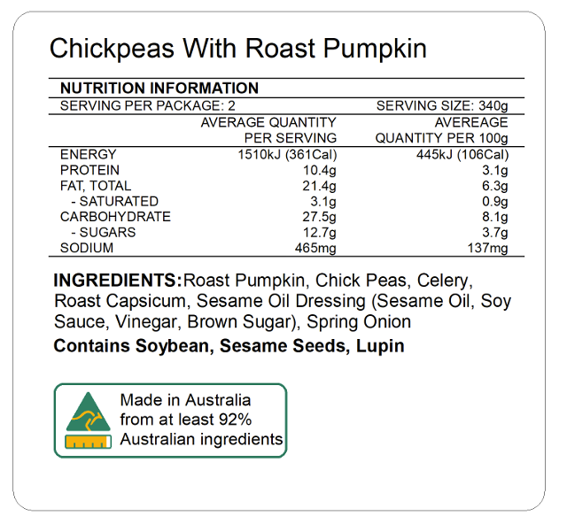

Using machine learning to promote healthier diets in Australia
Tazman undertook the Master of Health Data Science from 2021 – 2022. He is currently undertaking a PhD in Public Health Nutrition at The George Institute for Global Health. He has interests in epidemiology, biostatistics, machine learning, and health economics.
Do you eat enough dietary fibre?
Did you know the World Health Organisation recommends a daily fibre intake of 25-30g per day, but the mean dietary fibre intake is around 12g in Australia? As a result, diets low in fibre are responsible for 1.6% of the burden of disease in Australia, with this mostly attributable to cases of cardiovascular disease and type 2 diabetes. But you’d be forgiven for not knowing much about fibre in Australia. Currently, in Australia, fibre content labelling on packaged foods is often unavailable. This makes it difficult for consumers to make informed food purchase decisions, for researchers to conduct epidemiological studies related to fibre intakes, and for policymakers to monitor trends in fibre levels in the food supply.

Predicting fibre content
Cue machine learning. Here, in a study I published in Nutrients with researchers at The George Institute for Global Health, I outline how a simple machine learning algorithm (k-nearest neighbours, KNN) can be used to efficiently predict the fibre content of packaged foods based on six commonly available nutrient values (i.e., carbohydrates, sugar, total fat, saturated fat, protein, and sodium) and the food category. This algorithm, which was trained using 21,000 packaged products in the FoodSwitch database, exhibited an \(R^2\) score of 0.84 on a test dataset and outperformed a prior manual fibre content prediction approach. Thus, representing an efficient way to estimate fibre content on a large scale!
Digging a little deeper, we found that performance was high for ‘soup’ products (\(R^2\) = 0.89) but low for ‘cakes, muffins, and pastries’ (\(R^2\) = 0.00), with underperformance in the latter likely due to the small number of training products in this category. As the FoodSwitch dataset grows and the number of training products increases, we expect the accuracy of the predictive algorithm to improve for this category. Furthermore, we found that a strong predictor of the accuracy of the algorithm was the proximity of the closest neighbour, as products with a close nearest neighbour (i.e., first-neighbour distance in the first quartile of all first-neighbour distances) exhibited an accuracy of 99%. There is potential to apply this algorithm to food composition datasets to inform research and monitoring related to fibre. Additionally, the algorithm could be incorporated into novel barcode scanning phone applications (e.g., MyFitnessPal) so that consumers can scan a product and see the estimated fibre content. The approach can also be adapted to predict other nutrients of public health concern that are often omitted on food labels (e.g., added sugar and folate). However, it’s important to note the algorithm may not generalise well to countries with food supplies very different to Australia.
My first ever international conference
It was a lot of work getting this piece published. But after publication, something exciting happened. A nutrition researcher from the University of Toronto contacted me saying that she liked the work and that she would like me to present it at an AI symposium at a large nutrition conference hosted in Sweden in June 2023 (International Society of Behavioural Nutrition and Physical Activity). I was pleasantly surprised and humbled to receive this invitation and knew it was an opportunity I could not miss!
Leading up to the conference, I was quite nervous. It was my first time presenting to an international audience and I needed to present alongside senior researchers in my area. To prepare, I focussed on delivering a clear presentation that would be understandable to a general science audience. I also practiced my presentation with my colleagues and role-played the Q&A segment. Additionally, I familiarised myself with the other panel members’ work so that I could talk about my work in context.
On the day, I delivered the presentation and I think it went well. I received several questions pertaining to the methodology and policy implications of the work, as well two tweets saying they liked the work. Overall, it was very rewarding to share this work with researchers from around the world who were working on similar problems, and this conference was one of my highlights from 2023.
My message to current students is that hard work pays off. I know the feeling of debugging code for hours just to realise you missed a bracket. I know what it’s like to try and wrap your head around the internal structure of neural networks. And I know how challenging it can then be to try to simplify these topics when you talk to less technical audiences. Persistence is key and its super exciting when you finish a data science project and start to see its impact. And I’d like to give a special shout out to all those who helped me with this work, including Oscar Perez Concha and Sebastiano Barbieri at the Centre for Big Data Research in Health.